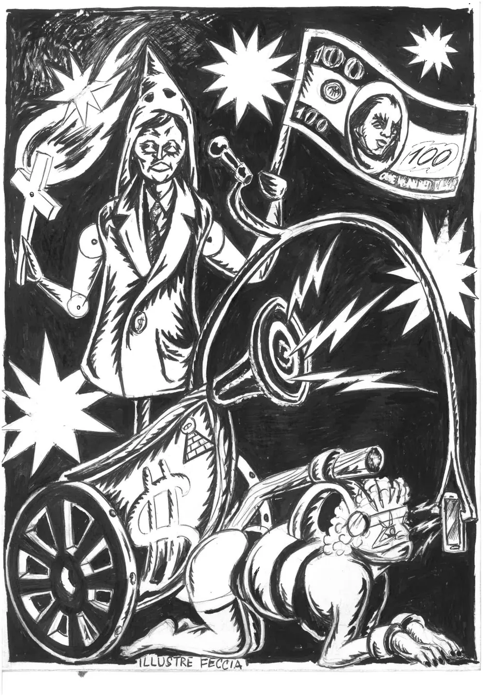

Il mazzo
Acquista
un mazzo
Ventidue carte per leggere presente e futuro, attraverso i volti del Potere che censura, sorveglia e reprime, e le forze che a quel Potere resistono. Illustrazioni originali di Illustre Feccia.

Cosa troverai nella scatola
- 22 carte di grandi dimensioni (10,5 × 14,8 cm), ispirate ai tarocchi, illustrate dall'artista Illustre Feccia.
- Il foglietto illustrativo con la descrizione delle 22 carte: cosa rappresentano e come possono essere lette.
Quanto costa
24 euro
più eventuali spese di spedizione.
Come si acquista
- Direttamente da qui con PayPal.
- In una delle librerie che ospitano il progetto: stiamo costruendo l'elenco, che troverai qui. Scrivici per sapere se ce n'è già una vicino a te.
Il modulo di pagamento viene caricato da PayPal solo quando lo chiedi: finché non premi il tasto, questa pagina non contatta nessun servizio esterno.
Dove vanno i soldi
Ogni mazzo venduto sostiene il lavoro di Illustre Feccia e di info.nodes: le nostre inchieste e reportage, le nostre ricerche e i laboratori nelle scuole e nei collettivi, la possibilità di portare l'Oracolo dove serve senza chiedere niente a chi lo ospita. Non è semplicemente un gadget: è il modo in cui questo progetto continua a esistere.